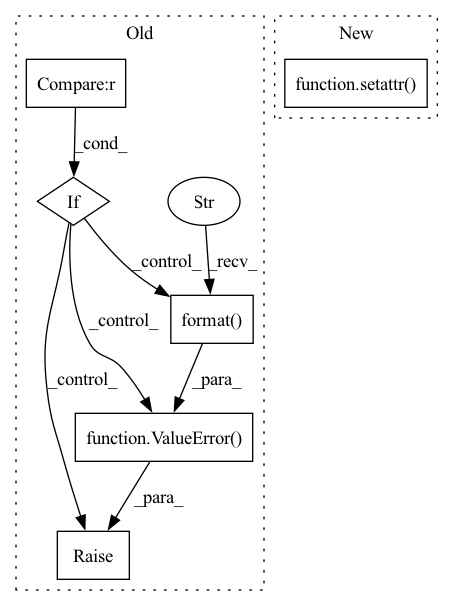

Pattern ID :410
Before Change
``["expm", "cayley"]`` or a custom callable. Default: ``"expm"``
size = getattr(module, tensor_name).size()
if len(size) < 2 :
raise ValueError(
"Cannot put grassmannian constraints on a vector. "
"Got a tensor of size {}".format( size)
)
n, k = size[-2:]
n, k = max(n, k), min(n, k)
P.register_parametrization(module, tensor_name, Grassmannian(size, triv))
// The base is already initialised to a random pointAfter Change
size = getattr(module, tensor_name).size()
M = Grassmannian(size, triv)
P.register_parametrization(module, tensor_name, M)
setattr( module, tensor_name, M.sample())
def low_rank(module, tensor_name, rank, triv="expm"):
rAdds a low rank parametrization to the tensor ``module.tensor_name``.In pattern: SUPERPATTERN
Frequency: 3
Non-data size: 6
Instances Fragment ID: 2350977
Project Name: lezcano/geotorch
Commit Name: 079455b05dfed1970cbe561f9dd491cb297cbe5f
Time: 2020-12-30
Author: lezcano-93@hotmail.com
File Name: geotorch/constraints.py
M Class Name: AnonimousClass
N Class Name: AnonimousClass
M Method Name: grassmannian(3)
N Method Name: grassmannian(3)
M Parent Class:
N Parent Class:
M File Name: geotorch/constraints.py
N File Name: geotorch/constraints.py
M Start Line: 236
M End Line: 249
N Start Line: 228
N End Line: 231
Before Change
def _build_register(self):
for metric in self.metrics:
if metric not in metric_information :
raise ValueError( "Metric {} not be signed up in /evaluator/register.py".format( metric))
metric_needs = metric_information[metric]
for metric_need in metric_needs:
setattr(self, metric_need, True)
After Change
for metric in self.metrics:
metric_needs = metric_information[metric]
for info in metric_needs:
setattr( self, info, True)
def has_metric(self, metric: str):
if metric.lower() in self.metrics:
return True Fragment ID: 2350976
Project Name: rucaibox/recbole
Commit Name: c6de9117bc16723e54650927764c5b09ca2f9166
Time: 2021-08-30
Author: 970955517@qq.com
File Name: recbole/evaluator/register.py
M Class Name: Register
N Class Name: Register
M Method Name: _build_register(1)
N Method Name: _build_register(1)
M Parent Class: object
N Parent Class: object
M File Name: recbole/evaluator/register.py
N File Name: recbole/evaluator/register.py
M Start Line: 59
M End Line: 66
N Start Line: 77
N End Line: 81
Before Change
``["expm", "cayley"]`` or a custom callable. Default: ``"expm"``
size = getattr(module, tensor_name).size()
if len(size) < 2 :
raise ValueError(
"Cannot put orthogonal constraints on a vector. "
"Got a tensor of size {}".format( size)
)
n, k = size[-2:]
n, k = max(n, k), min(n, k)
P.register_parametrization(module, tensor_name, Stiefel(size, triv))
// The base is already initialised to a random pointAfter Change
size = getattr(module, tensor_name).size()
M = Stiefel(size, triv)
P.register_parametrization(module, tensor_name, M)
setattr( module, tensor_name, M.sample())
def almost_orthogonal(module, tensor_name, lam, f="sin", triv="expm"):
rAdds an almost orthogonal parametrization to the tensor ``module.tensor_name``. Fragment ID: 2350975
Project Name: lezcano/geotorch
Commit Name: 079455b05dfed1970cbe561f9dd491cb297cbe5f
Time: 2020-12-30
Author: lezcano-93@hotmail.com
File Name: geotorch/constraints.py
M Class Name: AnonimousClass
N Class Name: AnonimousClass
M Method Name: orthogonal(3)
N Method Name: orthogonal(3)
M Parent Class:
N Parent Class:
M File Name: geotorch/constraints.py
N File Name: geotorch/constraints.py
M Start Line: 134
M End Line: 147
N Start Line: 137
N End Line: 140